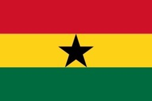

About Ghana
Formerly Gold Coast, Ghana became independent from Britain on March 6, 1957, and was the first black African colony to achieve independence. The European power struggles in Ghana between the 15th and 19th centuries started with the Portuguese who built Elmina Castle in 1482 followed by the Dutch, Swedes, Danes, Prussians and the British looking for fortunes in gold and ivory. This intense commercial rivalry ended with the growth of the tragic trade in slaves - all 42 European castles and fortifications being used as dungeons for the millions who lost their lives or whose descendants compose the African diaspora today. Cape Coast Castle, one of the best preserved, is an official museum of the Slave Trade. he capital in Ghana is Accra and is located on the Greenwich Meridian, with a population of about 3 million. Weatherwise Northern Ghana has a rainy season from about April to October. The rest of the year it is hot and dry with temperatures up to 38 C. In southern Ghana the rains last from April to June and again from September to October. Generally temperatures are between 21 C and 32 C. click here for more
Facts about Ghana

It Was The First Sub-Saharan Country To Gain Independence
The country gained independence in 1957, but it went through many coups that devastated it for at least three decades. It started witnessing some stability in 1981 when Lt. Jerry Rawlings came into power. Ever since then, the country has seen a peaceful time. More info

There Are Two Distinct Rainy Seasons
The rainy season in Ghana is split into two unique parts. The first season is a wet one, and then it is followed by dry weather for two months. Finally, the country receives a second rainy season that lasts for at least a month. More info
There Are Two Distinct Rainy Seasons
The rainy season in Ghana is split into two unique parts. The first season is a wet one, and then it is followed by dry weather for two months. Finally, the country receives a second rainy season that lasts for at least a month.